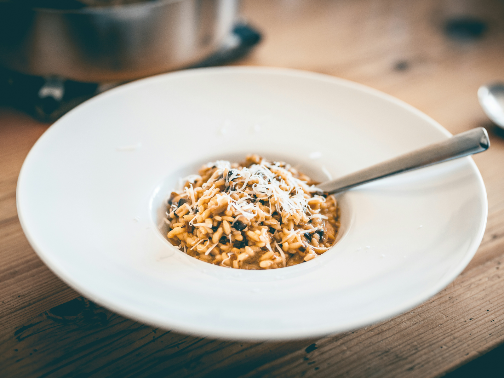

Risotto ai Funghi
Carbonara
Risotto
Tiramisu
Desrciption
Risotto ai Funghi is a Northern Italian delight that celebrates the rich and earthy flavors of mushrooms.
This creamy and velvety risotto is crafted by slowly cooking Arborio rice in a flavorful broth infused with mushrooms,
onions, garlic, and white wine. Finished with a generous amount of Parmesan cheese and a hint of butter, the result
is a luxurious dish that showcases the depth of Italian culinary expertise. Each spoonful is a journey into the heart
of the Italian countryside, with the umami of mushrooms dancing on your palate.
Ingredients
- 1 1/2 cups Arborio rice
- 200g mixed mushrooms (porcini, shiitake, cremini), sliced
- 1 onion, finely chopped
- 2 cloves garlic, minced
- 1/2 cup dry white wine
- 4 cups chicken or vegetable broth
- 1/2 cup Parmesan cheese, grated
- 2 tablespoons butter
- Salt and pepper to taste
How to Prepare
- In a saucepan, heat the chicken or vegetable broth over low heat and keep it warm.
- In a large skillet, sauté the chopped onions in olive oil until translucent. Add the minced
garlic and sliced mushrooms, cooking until the mushrooms release their moisture and become golden brown.
- Add Arborio rice to the skillet and toast it for a couple of minutes until the edges become translucent.
- Pour in the white wine, stirring constantly until it evaporates.
- Begin adding the warm broth one ladle at a time, stirring frequently and allowing the liquid to be absorbed
before adding more. Continue this process until the rice is creamy and cooked to al dente texture.
- Stir in the grated Parmesan cheese and butter. Season with salt and pepper to taste.
- Serve the mushroom risotto hot, garnished with additional Parmesan cheese if desired.
